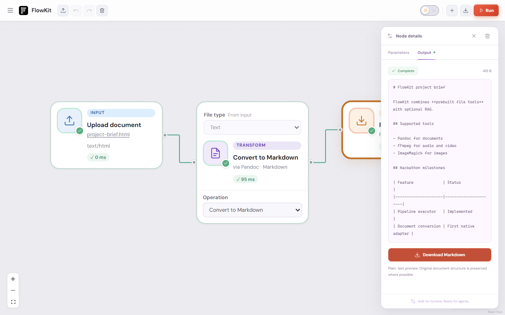
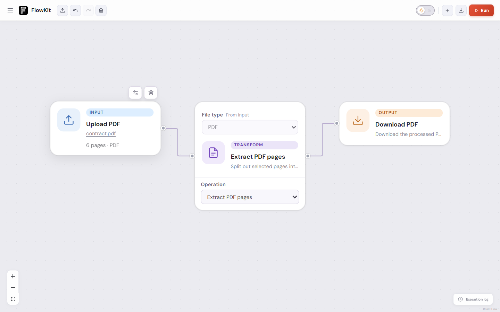
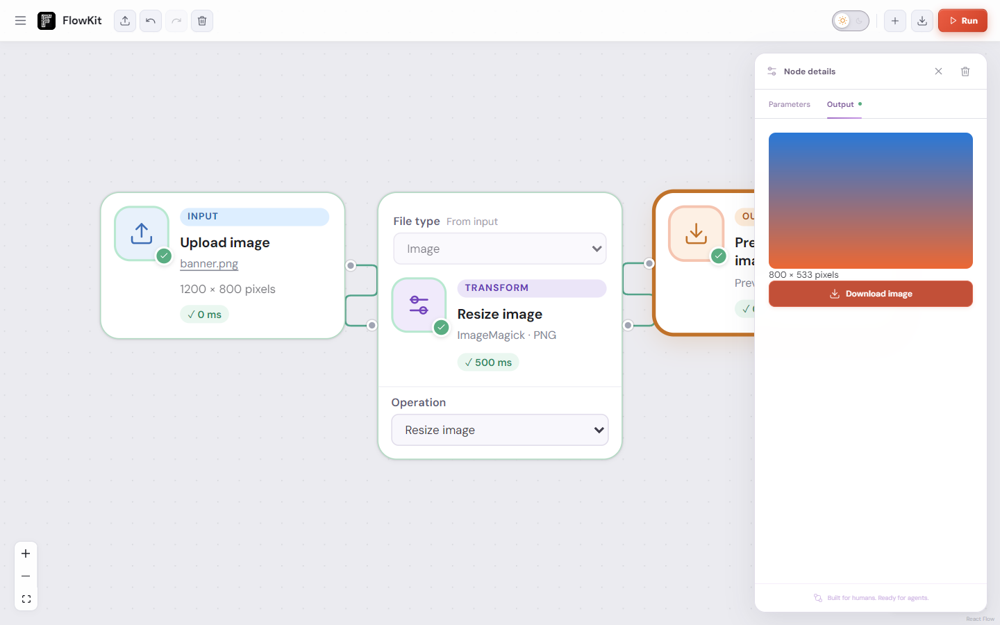

flowkit-mcp 0.3.1 · MIT licensed
Process files once.
Let agents reuse the tools.
FlowKit gives AI agents 46 ready-made tools for documents, PDFs, images, audio, and video. They run locally with Pandoc, qpdf, ImageMagick, and FFmpeg, so an agent sends a short tool call instead of writing a script — about 80% fewer tokens per task. The same operations power a visual workflow studio.
video workflow
Uploadclip.mp4
ProcessExtract audio
Downloadclip.mp3
The same typed operation is available to an agent as flowkit_video_extract_audio.
Installation
Install in a minute.
Install the CLI from npm, check your setup with --doctor, then add it to your agent. FlowKit only reads and writes inside the workspace folder you choose. No API keys, accounts, or uploads.
Requirements: install only the engines for the tools you use
Read the full setup guide ↗
Tools
46 tools. Load only the groups you need.
Every tool writes a new file under .flowkit-artifacts/ and returns its path and metadata, never the file bytes. Agents chain tools by passing one result's path into the next call. Add --tools pdf,image to load fewer tool definitions and cut the start-up cost from 6,068 to about 1,668 tokens.
Testing & verification
Every tool runs against real files.
The benchmark starts the published server over MCP stdio and calls every tool on generated documents, PDFs, images, audio, and video, then checks that unsafe inputs are rejected. The automated test suite covers the same paths in CI.
46 / 47tool runs passed
6/6safety checks blocked
380 msmedian tool call
Health check
Verified
Benchmarks · 2026-11-22
Fewer tokens per task. An honest start-up cost.
Each task compares a compact, safe script an agent would write (with path checks, timeouts, and no overwrites) against one FlowKit tool call. Tool definitions are read from the live server, and every tool is timed on real files. Tokens are estimated as bytes ÷ 4, not billing data.
(406 saved on average)
(6.1K for all tools)
(15 with all tools)
npm run benchmark
Full report ↗
For a single one-off task, writing a script is cheaper because the tool list costs tokens up front. FlowKit wins once a session has a handful of file tasks, and clients that load tool definitions on demand pay even less.
Workflow studio
See the same tools on a canvas.
Drag Upload, Process, and Download nodes, drop in a file, and run. FlowKit detects the file type, shows metadata, and previews the result.



Agent setup
Connect FlowKit to your agent.
Choose your client, replace /path/to/files with the folder FlowKit may work in, and restart the client. Add --tools to load only the groups you need.
Free agent skill
Teach your agent when and how to use FlowKit, from picking tools to chaining steps and fixing errors.
Get it on Agensi ↗